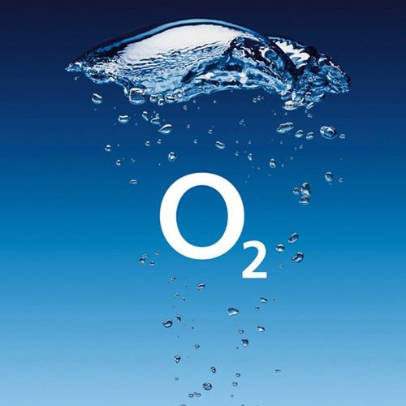

I recently graduated from an Artificial Intelligence MSc at University of Kent,
where I grew my interest and skill set within AI development.
Since this I have been eager to keep improving my craft,
working on a variety of projects within the areas of Data Engineering and Machine Learning.
This website is for me to showcase some of the bigger projects I have worked on,
as more of an extension to my CV. Although, almost all my projects can be found on either GitHub or Kaggle too.
I am eager to advance into the industry and to work on projects that have a real world impact.
I am a problem solver at heart, so put my all into my work to ensure I accomplish what I set out to achieve.
I work mainly in Python at the moment, with a minor history in web development.
However, I am easily adaptable and a keen learner,
so would be interested to expand my existing knowledge depending on the task at hand.
I am currently getting into the idea of blogging my journey within the industry on Instagram.
I'm finding it pretty fun to write about the things I am working on, having a visual gauge on my progress.
Go check it out @cpb_dev !
Other than that, I am also a gamer, golfer, reader, music lover and Netflix binger.
I have just finished playing God of War, while also playing/moving onto;
Hades, Horizon: Zero Dawn, and the occasional Bloodborne.
I am a huge music listener, being mainly into alternative rock and hip-hop.
Being a big gig and festival lover I have seen quite a few acts, such as;
Gorillaz, Arctic Monkeys, Circa Waves, Tyler the Creator, Loyle Carner… the list goes on.
It is a bit of a passion of mine, so much so, I based my MSc final year project around music
(which you can see in the projects list below).
With golf, I try to play as much as possible.
Since university, however, it has been increasingly difficult to get out.
With a handicap of 18, my game could do with a bit of improvement though.
Producing Novel Music Using a Deep Neural Network
This project was used as part of my AI MSc at the University of Kent for my final Dissertation.
With this project, I wanted to comprise a dataset of different songs by various artists,
constructing a deep neural network that can find patterns and learn to produce songs of its own.
I used a variety of datasets for different types of music files, namely; WAV, MP3 and MIDI files.
The technologies I used for the data collection and manipulation was Music21 and Librosa. When it
came to the construction of the network I used a variety of libraries such as; TensorFlow, Keras,
Pandas, NumPy and SkLearn.
Using Reinforcement Learning to Play Tetris
This was a group project as part of my Natural Computation module in my AI MSc.
For this project, I was elected team leader for a group of three,
where we had to use reinforcement learning techniques to produce an AI that could play Tetris.
For this project we used a range of Python libraries, such as;
PyGame, PyTorch, NumPy, MatPlotLib and tkinter.
We had to separate the project into a few different areas,
one for the building of the game board and mechanics,
one for the controlling and understanding of the game state,
and the final for the Neural Network that would be processing the game.
Making an Automated Smart Desk
This was a fun little project I did for my IOT module as part of my MSc in AI.
In this project I used an Arduino and an Alexa to automate my desk set-up.
The idea of the project was to run an Alexa routine as the presence of a
person is detected by the Arduino. This would be fully customisable by the user,
however, it would essentially get the mood right as a user is sat at their desk for work.
Creating a Booking System for Golf Club Fittings using Android Studio
This project was done in collaboration with the Complete Golfer,
as part of my Android Development module in my Computing BSc third year.
Using Android Studio I created a form for saving customer information as
they check in for a club fitting, saving this data to an internal MySQL database.
Blue Cloud Journal
IMDB and Movie Sequels Data Visualisation
Water Bottle Classification
Artificial Intelligence MSc
MERIT
September 2021 - September 2022
Computing BSc (Hons)
2:1
September 2018 - July 2021
The Complete Golfer
Website Administrator
July 2014 - Present

O2
Sales Advisor - Sony Ambassador
February 2020 - September 2021
Blink
Deployment Engineer
September 2019 - October 2019
IPSOS MORI
Tech Support (Work Experience)
August 2016
- Strong knowledge with Java Script and Android Development, having worked on projects
both personally and within a team.
-
Very proficient in Python, making this my main programming language. Through my
studies I had experience with and developed knowledge on Matplotlib, TensorFlow,
NumPy and Pandas.
-
A firm basis of database management knowledge, using both SQL and JSON code.
-
I have worked on a variety of programming projects using languages such as Python, Java
Script, C++, PHP, HTML, etc. With source code available on my GitHub.
-
I was elected the Junior Captain of Moor Park Golf Club in 2017. As part of this, I had to
lead the team through public speeches for both home and away matches. In meetings
with the governing bodies of the club I would represent my teammates interests and
concerns. I also lead the team on a trip to Antwerp where we had an annual competition.
-
Participation within the DofE bronze award.